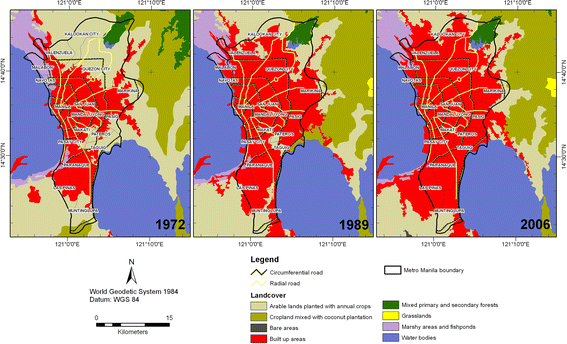

4 Policy
4.1 Manila: using remotely sensed data to deal with urban heat islands
My chosen city is Manila, the capital of the Philippines, located in the northern Philippines archipelago.
4.2 Summary
Before even starting to discuss Manila specifically, it must be noted that the Philippines ranks as one of the most rapidly urbanising countries in the world, with more than 60% or its population living in cities; what is more, this number is predicted to reach 84% by 2050 (“Addressing Urban Heat in Metro Manila Cities: Urban Heat in the Philippine Context” 2019). As a capital city, it is not surprising that Manila is disproportionately burdened by the extreme rates of urban sprawl and population growth the country as a whole is facing.

As urban sprawl continues and population growth surges in Metro Manila, the city grapples with a multitude of challenges like traffic congestion, air pollution, informal settlements/slums, inadequate infrastructure, flooding, waste management challenges, longer hotter season (El Niño Phenomena), and vulnerability to natural disasters, factors all of which collectively exacerbate the urban heat island (i.e.,a phenomenon wherein urban regions encounter higher temperatures compared to adjacent rural areas) problem in the metropolitan area. Urban heat islands (UHI) can lead to heightened risks of health-related issues, heightened energy usage, increased pollution levels, and compromised water quality (Zhou et al. 2018). Given the potential adverse effects on cities and their residents, it’s imperative to utilise existing resources and data to identify and measure these impacts.
Through the promotion of inclusivity, safety, and resilience in cities and human settlements, SDG 11, among the United Nations’ “17 Sustainable Development Goals”, underscores the significant role that cities hold in the global political agenda (WorldBank 2017). SDG Goal 11, aimed at making cities and human settlements inclusive, safe, resilient, and sustainable, directly aligns with Manila’s context by highlighting the city’s ongoing endeavors to combat urban heat island effects, enhance infrastructure resilience, and promote equitable access to green spaces, thereby fostering a more livable and sustainable urban environment for all residents.
In Manila, the responsibility for tackling urban heat island (UHI) issues would likely fall under the jurisdiction of multiple government agencies, including the Department of Environment and Natural Resources (DENR), the Metropolitan Manila Development Authority (MMDA), The Department of Human Settlements and Urban Development (DHSUD), and the local government units (LGUs) of the smaller areal units within Metro Manila (MM). To my knowledge, these agencies often collaborate to implement policies and initiatives aimed at mitigating UHI effects and improving urban climate resilience.
In a relatively recent report to the World Bank, MMDA and DHSUD have outlined their action plan detailing UHI mitigation measures proposed (“Addressing Urban Heat in Metro Manila Cities: Urban Heat in the Philippine Context” 2019). Suggested solutions rely heavily on previous successful case studies from cities like Guangzhou (i.e., as a Sponge City — Haizhu wetlands), Paris (i.e., as a Sponge and Waterproof City), and, most importantly, Singapore (i.e, Green Plan 2030, Digital Urban Climate Twin). Science-based UHI strategies through scenario building and comprehensive mapping are identified as a key takeaway, suggested transfer to the MM context includes the following:
- Capacity-building
- Acquisition/development of programs and platforms
- Installation and rehabilitation of sensors
- Workshops on UHI
- Identification of Baseline, KPIs and Targets
- Stakeholder consultation
- Surveys
- Multi-agency meetings
- Stakeholder consultation
- Geospatial analysis
- Mapping of vulnerability of MM cities to UHI
- Mapping of existing Urban Green Spaces
- Monitoring and Evaluation
- Assessment through KPIs
- Establishment of feedback mechanism
- Valuation of natural resources
4.3 Applications
While “Addressing Urban Heat in Metro Manila Cities: Urban Heat in the Philippine Context” (2019) does not go into detailed plans on how this action plan will be implemented in reality, there is no doubt that remotely sensed data will be crucial throughout the process, particularly during the geospatial analysis as well as monitoring and evaluation stages.
For mapping the vulnerability of MM cities to UHI and identifying existing urban green spaces, data from satellites and sensors such as Landsat, Sentinel-2, and MODIS can be utilised. These platforms provide multispectral and thermal imagery suitable for assessing land surface temperature variations and vegetation cover. Additionally, sensors like ASTER (Advanced Spaceborne Thermal Emission and Reflection Radiometer) and WorldView offer high-resolution imagery for detailed analysis of urban features and green spaces. Integrating data from these sources enables comprehensive geospatial analysis to support urban planning and management efforts in addressing UHI and enhancing green infrastructure.